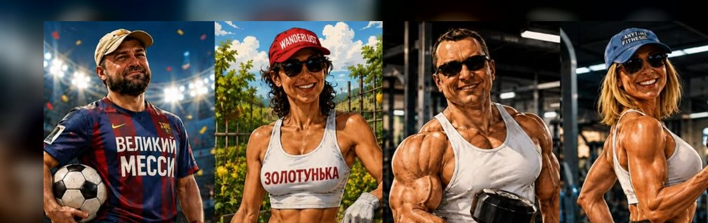

02–03 ноября
VKO → IST → CPT
Turkish Airlines через Стамбул
Кейптаун, винные долины, океан, сафари — и продолжение у водопада Виктория. Путеводитель группы на 02–16 ноября 2026.
Это не просто маршрут из точек на карте. Это ещё один повод быть вместе: смеяться в дороге, делить большой стол, поддерживать друг друга и собрать историю, которую потом будем вспоминать годами.
Как на челлендже: движение, дружба, цели — только теперь с водопадом и сафари.
Водопад, саванна, Кейптаун и Замбези — чтобы настроение поездки чувствовалось ещё до вылета.
Программа группы подтверждена PDF организатора. Личные перелёты не нашлись в доступных почте и календаре — они не подставлены наугад.
Turkish Airlines через Стамбул
Кейптаун · винные долины · Херманус · сафари
Продолжение к водопаду Виктория
База в Ливингстоне, Замбия; выезды в Зимбабве и Ботсвану
Ethiopian Airlines через Аддис-Абебу
В открытом сайте не публикуются PNR, номера билетов, паспортные данные и контакты. Ниже — только то, что можно безопасно показать.
Даты основной программы взяты из расписания. Время check-in/out и личные подтверждения бронирований — у стойки/в приложении отеля; номера комнат не публикуются.
Bloubergstrand, Кейптаун · стартовая база у Атлантики.
Открыть в Google Maps ↗Из CPT: ориентир 35–45 мин на трансфере; закладывать запас на трафик.
Stellenbosch · отель среди виноградников.
Открыть в Google Maps ↗Групповой переезд после Vergelegen; не отдельный трансфер из аэропорта.
Kleinmond / Bot River Lagoon · отдых после побережья.
Открыть в Google Maps ↗Групповой переезд после Benguela Cove.
Touws River, Karoo · сафари и ночёвка в заповеднике.
Открыть в Google Maps ↗Переезд из Arabella около 4 часов по программе.
Набережная Кейптауна. В программе ЮАР заезд 10.11; PDF Виктории заявляет «1 ночь в Кейптауне».
Открыть в Google Maps ↗Проверить фактические ночи и возможную смену номера 11/12 ноября.
Ливингстон, Замбия · база у реки Замбези.
Открыть в Google Maps ↗Из VFA: KAZA Univisa оформляется по прилёте; далее групповой трансфер в Ливингстон через границу Зимбабве → Замбия. Заложить время на паспортный контроль; порядок перехода подтвердить у организатора.
Погода может поменять порядок горы, вертолёта, китов и водных активностей. Ссылки ведут на точки в картах; столики и билеты — только по подтверждению организатора.
Ветровка, очки и SPF: на горе заметно прохладнее и ветренее.
Не кормить пингвинов и бабуинов; еду на виду не держать.
Cobra: закрытая обувь и тёплая ветровка; водителям — оригинал прав и МВУ, минимум 23 года. Левостороннее движение.
Ветровка, SPF и привычное средство от укачивания при необходимости.
Длинные брюки, кофта и куртка: в открытой машине вечером холодно.
SARS Traveller Declaration ↗: онлайн-декларация для въезжающих и выезжающих; подать не ранее чем за 24 часа до вылета.
Распределение активностей между 13 и 14 ноября в доступной программе не зафиксировано — не подставлено наугад.
Интерактивная карта не содержит личных адресов, бронирований и точек встреч, которые не нужны группе.
Это рабочая памятка, не замена требованиям перевозчика, погранслужбы и страховщика.
Кейптаун: ориентир около +15…+25°C, возможны ветер и короткий дождь. Херманус / океан: ощущается прохладнее. Сафари: утром и вечером нужна тёплая прослойка.
Прогноз перед выездом проверять за 7 дней и утром перед горой/вертолётом/китами.
В ЮАР — ZAR. Карты принимают широко; держать немного наличных для чаевых и мелких расходов. Конвертацию/курс проверять в банковском приложении в день оплаты.
Чаевые: в ресторанах обычно ориентир 10–15%, если сервис не включён; гиду/водителю — по правилам группы.
Сразу после прилёта — eSIM или местная SIM. В Кейптауне Uber обычно удобнее обычного такси; проверяй модель и номер машины перед посадкой.
Аренда авто: левостороннее движение; не оставлять вещи на виду, не ездить ночью по незнакомым районам без необходимости.
ЮАР: чаще Type M, иногда N — нужен адаптер. В городах: не демонстрировать телефон и часы, пользоваться официальными трансферами/Uber, вечером выбирать оживлённые районы и не ходить одному по незнакомым улицам.
Экстренно: полиция 10111, с мобильного 112, скорая 10177. Номера перепроверить после прилёта.
Туристическая виза не нужна на срок до 90 дней. Проверить срок паспорта, чистые страницы, обратный/следующий билет и адрес проживания. Правила могут измениться — финальная проверка перед вылетом обязательна.
Консульский департамент МИД РФ ↗SARS Traveller Declaration: официальный сервис для въезда и выезда; подача доступна не ранее чем за 24 часа до вылета.
База — Ливингстон, Замбия. Водопад смотрят с замбийской и зимбабвийской сторон; сафари в Чобе — Ботсвана.
Для россиян Замбия допускает оформление визы по прилёте; Зимбабве относит РФ к странам, которые могут получить и оплатить визу по прибытии. Сумма и решение — у погранслужбы: иметь USD наличными и перепроверить за 48–72 часа.
Посольство Замбии в Москве ↗Официальная страница Замбии указывает: для граждан РФ KAZA Univisa доступна, стоит US$50, действует до 30 дней и позволяет многократно пересекать Замбию и Зимбабве; включает однодневную поездку в Ботсвану через Kazungula.
Для рекомендованного перелёта CPT → VFA KAZA Univisa оформляется по прилёте в VFA; затем — переезд через границу в Ливингстон. Наличие бланков и порядок перехода подтвердить перед вылетом.
Zambia Immigration: KAZA Univisa ↗Паспорт и наличные USD держать отдельно и под рукой. Для границы — запас времени, не терять миграционные корешки. На Замбези и Купели дьявола — только с лицензированным оператором и строго по инструкции.
Ноябрь: жара около +33°C, возможны дожди; дождевик/сухой мешок, сандалии с фиксацией, вода, SPF и средство от комаров.